Bathroom flooring usually gets decided faster than almost any other material choice in the room, usually by whatever's cheapest or already sitting in the warehouse.
That's worth slowing down for. The floor affects how the whole room feels more than you'd expect, and in a small bathroom specifically, color and material both genuinely change how big the space reads.
Light colors and glossy finishes reflect more light and make a tight bathroom feel more open, and that's worth keeping in mind across every material on this list.

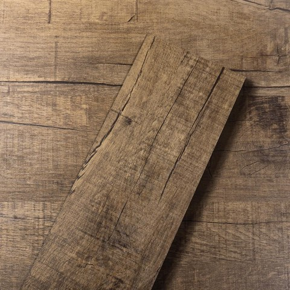
Peel and Stick Vinyl Flooring, 36 Pack 54 Sq.Ft, Wood-Look Luxury Vinyl Plank
Shop on Amazon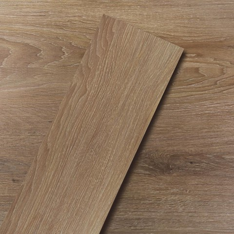
Peel and Stick Vinyl Flooring, 36 Pack 54 Sq.Ft, Wood-Look Luxury Vinyl Plank
Shop on Amazon1. Terracotta Tile
Terracotta brings genuine Mediterranean warmth, a rustic, cozy quality that pairs naturally with an earthy, sun-washed bathroom palette.
It also tends to age beautifully, developing more character over time instead of just looking dated.
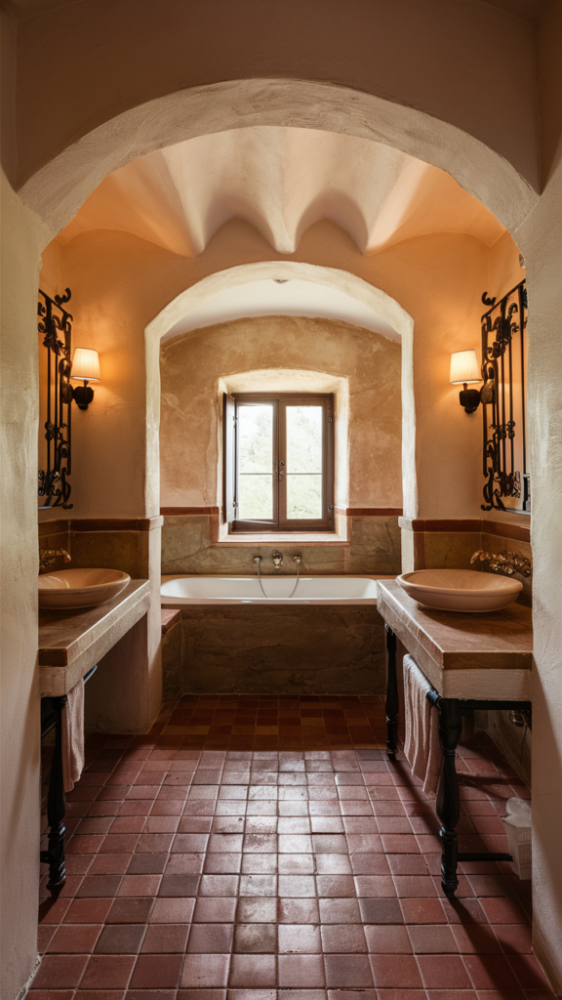
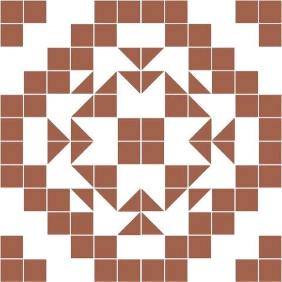
FloorPops Terracotta Matias Peel and Stick Floor Tiles, Geometric, Pack of 10
Shop on Amazon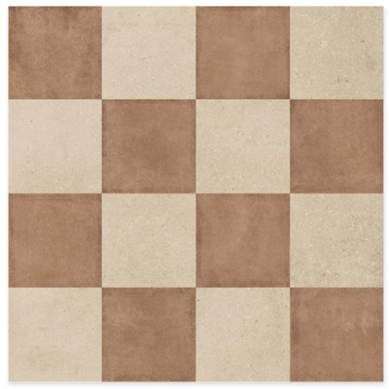
Peel and Stick Floor Tile, Checkered Vinyl Flooring, Terracotta, 20 Tiles
Shop on Amazon2. Cork Flooring
Cork brings a genuinely unexpected warmth and softness underfoot, plus real eco-friendly credentials to back it up.
It's one of the more distinctive choices here, worth considering if you're prioritizing comfort and sustainability over a more conventional look.
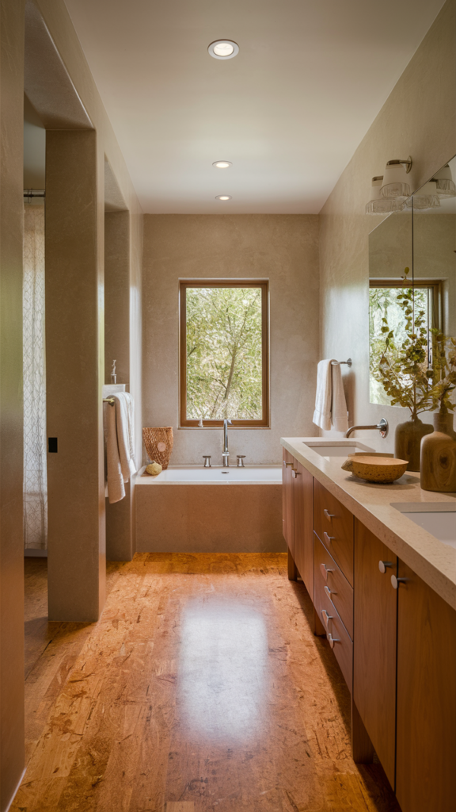
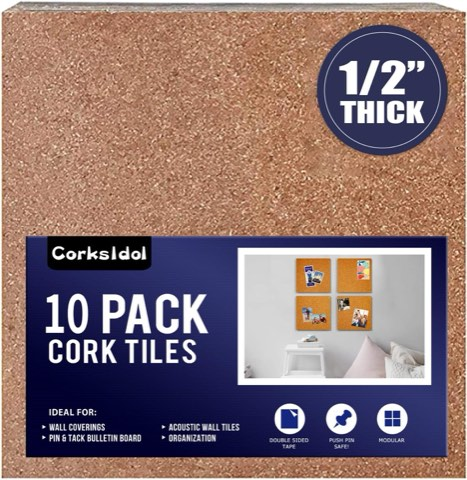
Corksidol Cork Tiles, 12"x12", 1/2" Thick, Self Adhesive Backing for Floor/Wall, 10 Pack
Shop on Amazon
3. Glass Mosaic
Shimmering glass mosaic tile brings genuine shine and a light-catching quality that matte materials simply can't match.
This works especially well if you're leaning into a glam or more maximalist bathroom styling direction.
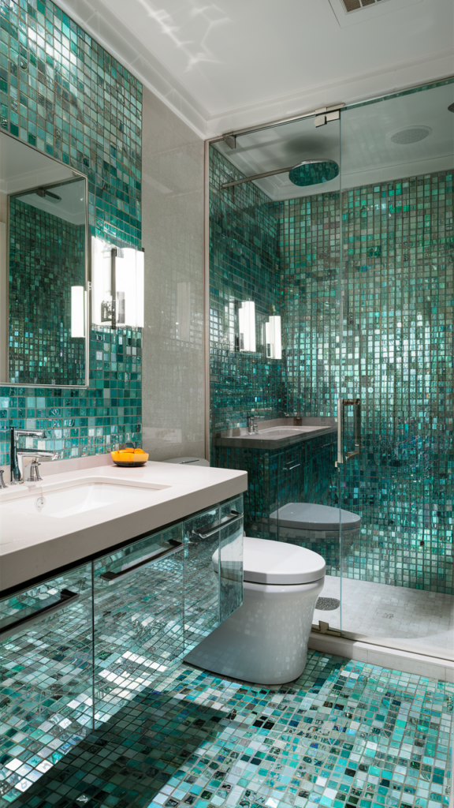
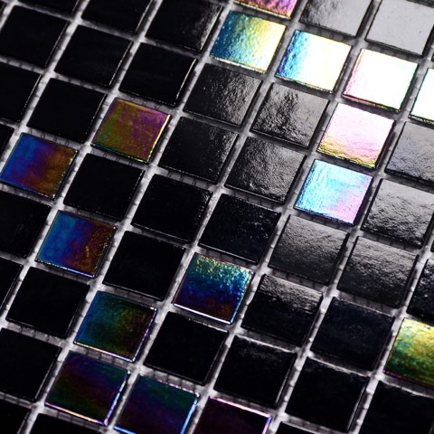
Iridescent Black Glass Mosaic Tile for Bath, Pool, Backsplash, 11.5 Sq.Ft
Shop on Amazon4. Herringbone Pattern
A herringbone layout brings real sophistication to even a fairly simple tile material, through pattern alone rather than an expensive material upgrade.
It's a good option if you want an elevated look without necessarily paying for the most expensive tile itself.
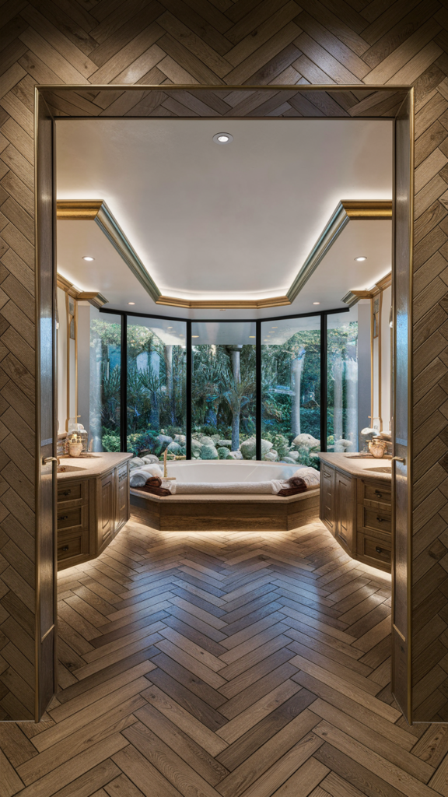
5. Vinyl Tile
Vinyl flooring delivers a genuinely stylish look at one of the most budget-friendly price points on this entire list.
It's a practical choice for a rental, or a lower-budget renovation that still wants a considered, finished look.
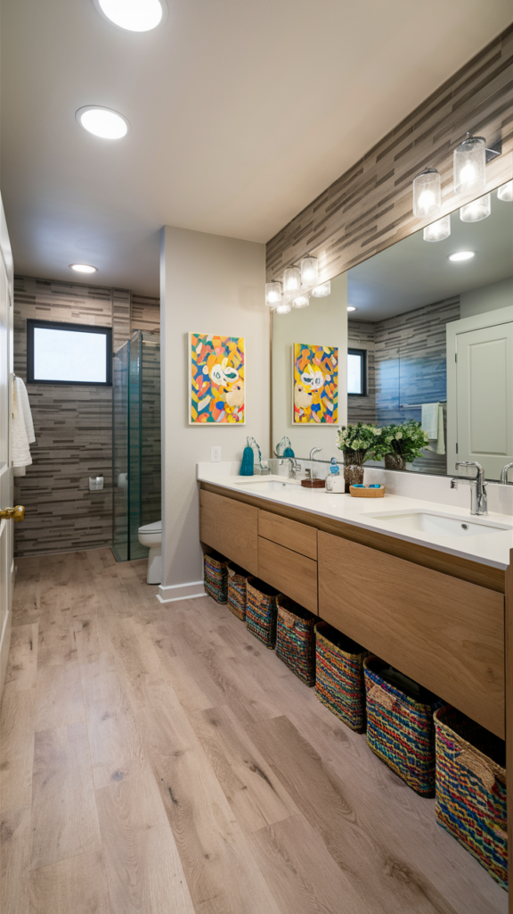
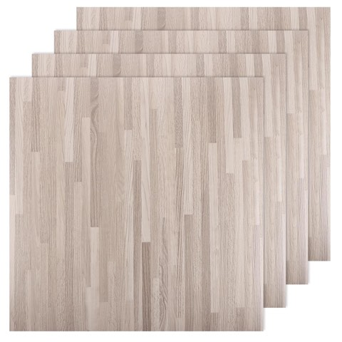
AKOLAFE 40 Sheet Vinyl Flooring, Peel and Stick Floor Tile, Waterproof, Striated Wood
Shop on Amazon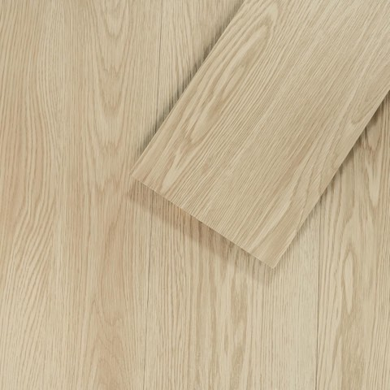
Mysflosy Peel and Stick Floor Tiles, Self-Adhesive Luxury Vinyl Plank, Deep Wood Grain
Shop on Amazon6. Penny Tile
Tiny round penny tiles bring genuine personality and a slightly playful quality that larger tile formats just don't offer.
This is one of the more distinctive, memorable choices on this list, suited to a bathroom meant to have real character.
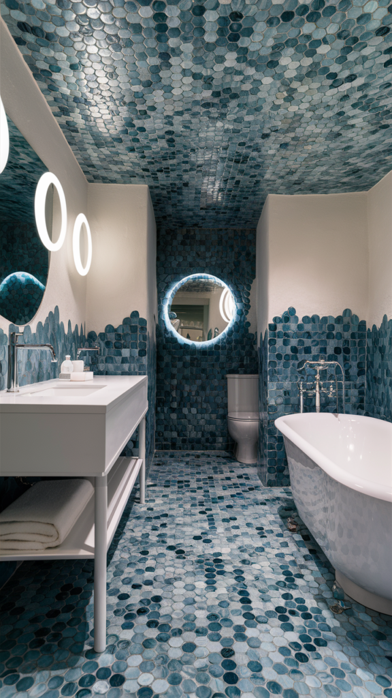
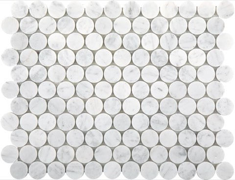
Carrara White Marble Mosaic Tile for Kitchen Bathroom Floor, 1 Inch Penny
Shop on Amazon7. Hexagon Tile
Small hexagon tiles bring a geometric, modern precision that reads as considered without needing a bold color or pattern to do it.
The shape also handles curves and smaller bathroom footprints better than large-format tile usually can.
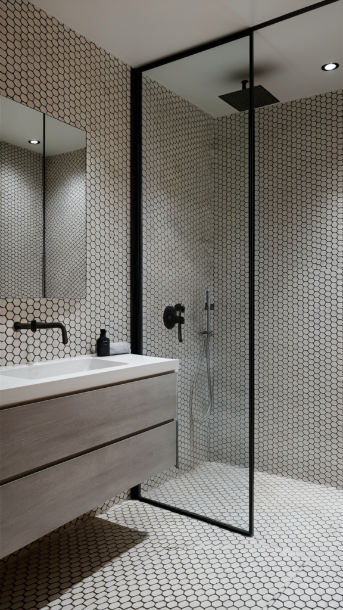
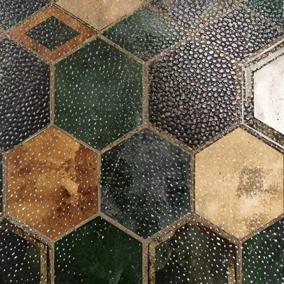
Peel and Stick Floor Tiles, Vintage Hexagon Vinyl Flooring, 10 Pack, Moroccan Mosaic
Shop on Amazon8. Natural Stone
Slate or similar natural stone brings an organic, spa-like quality that manufactured materials can't fully replicate.
It pairs especially well with a broader spa-bathroom styling approach, reinforcing that same calming, natural material story throughout the room.
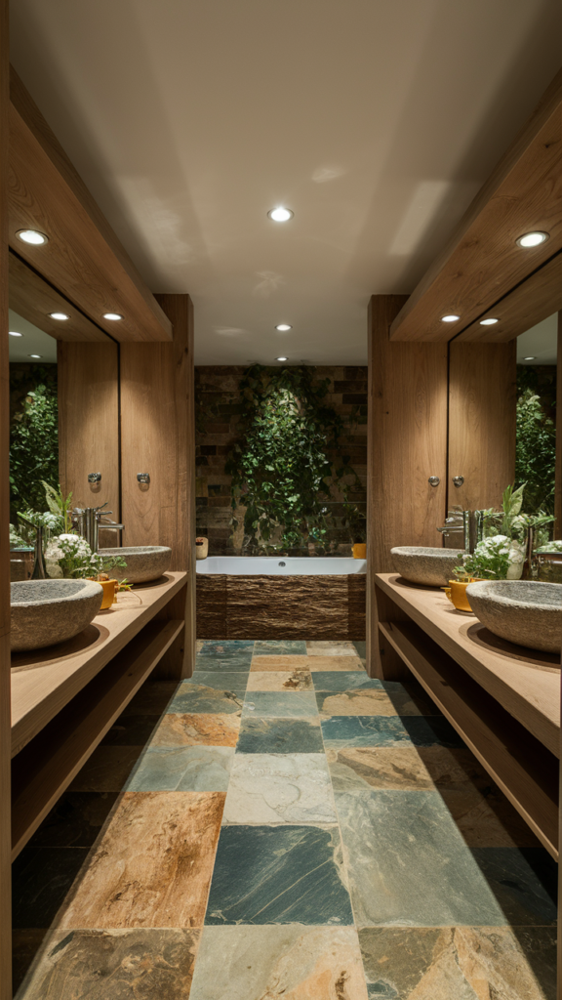
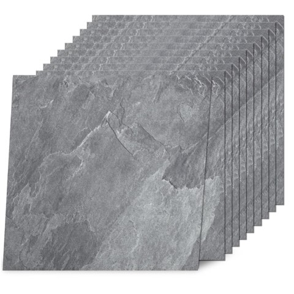
Yipscazo Peel and Stick Floor Tile, 32-Pack, Stone Gray, Self Adhesive Waterproof
Shop on Amazon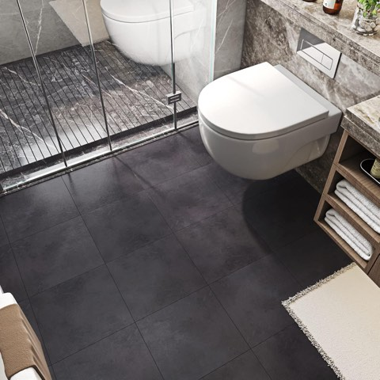
FunStick Peel and Stick Floor Tile, Slate Grey Vinyl Flooring, Waterproof, 5 Pcs
Shop on Amazon9. Black-and-White Checkered
A checkered floor brings genuine retro charm that instantly sets the whole room's character the second you walk in.
It's a bolder, more committed choice than most others here, worth it if you're confident in that specific aesthetic.
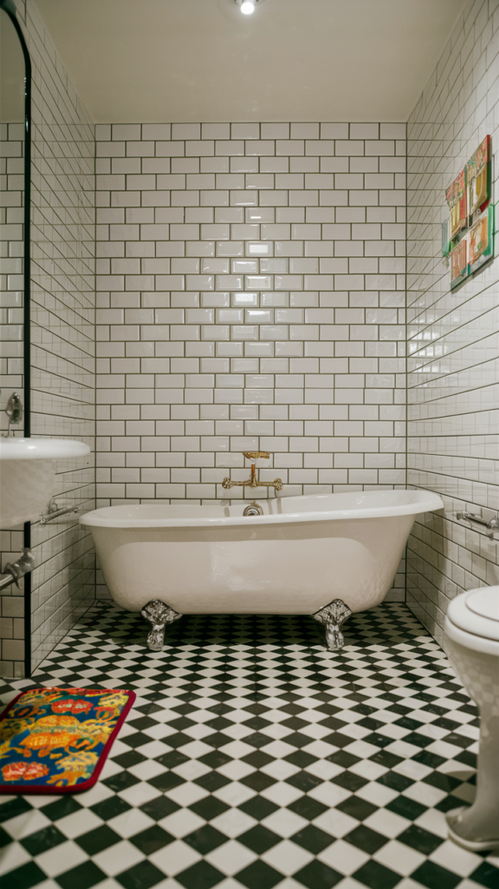
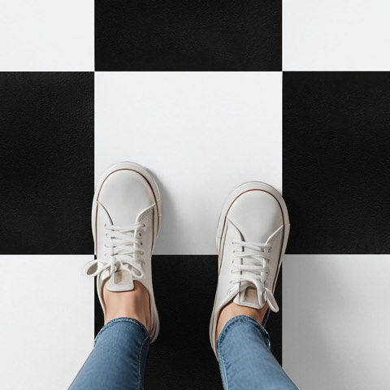
40-Pack Black and White Checkered Peel and Stick Floor Tiles, 12 x 12 Inch
Shop on Amazon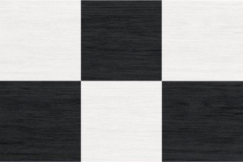
FloorPops x Chris Loves Julia Lawrence Black Peel and Stick Floor Tiles
Shop on Amazon10. Polished Concrete
Concrete flooring brings a genuinely industrial-chic edge that suits a more modern, minimalist bathroom especially well.
It also tends to be more budget-friendly than a lot of the other options on this list, relative to the impact it actually makes.
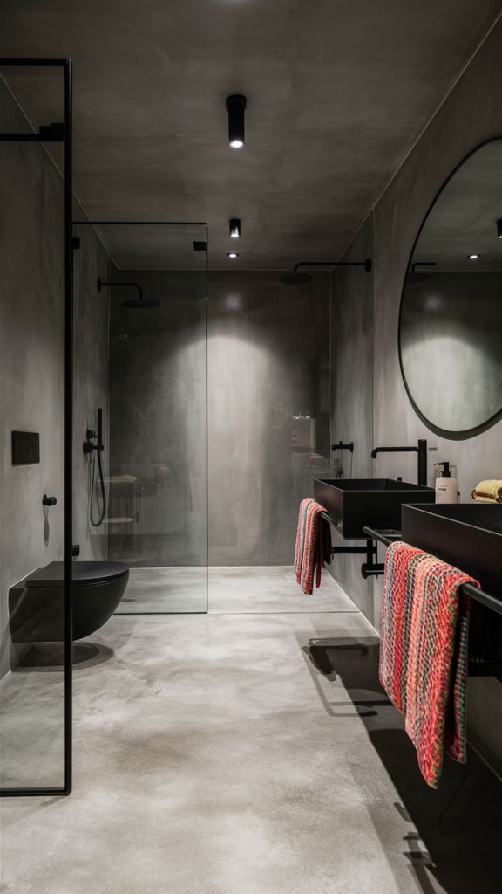
Livelynine 32-Pack Cement Slate Peel and Stick Floor Tile, Waterproof, Gray
Shop on Amazon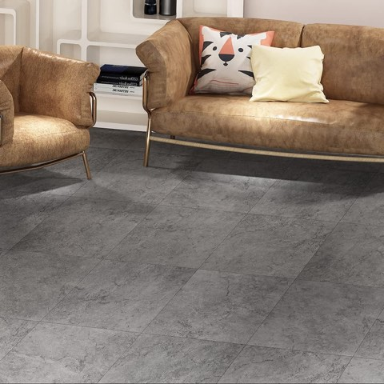
Livelynine Industrial Concrete Vinyl Flooring Peel and Stick Floor Tile, 4-Pack
Shop on Amazon11. Wood-Look Porcelain
Porcelain tile made to resemble real wood brings warmth, without the water-damage risk actual hardwood carries in a bathroom.
It's one of the more practical choices here, suited to anyone who wants wood's look without wood's bathroom-specific drawbacks.
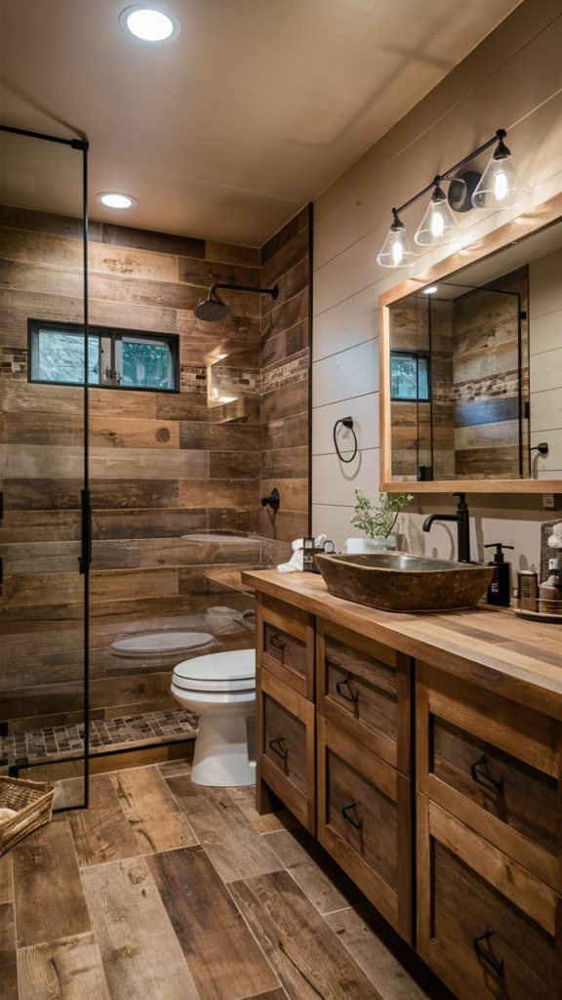
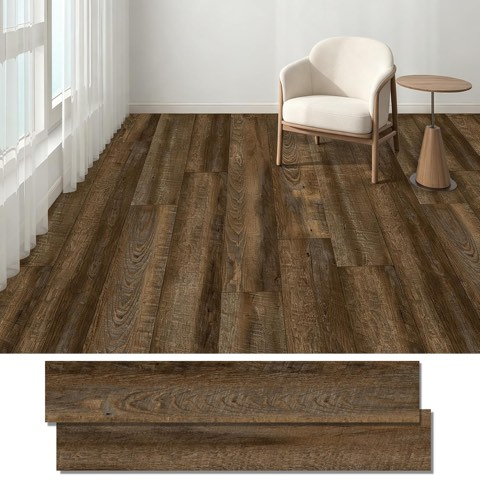
Peel and Stick Luxury Vinyl Plank, Waterproof, 54 Sq.Ft 36-Pack, Misted Oak
Shop on Amazon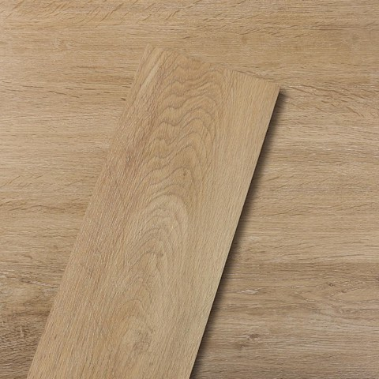
Peel and Stick Vinyl Flooring, 36 Pack 54 Sq.Ft, Wood-Look Luxury Vinyl Plank
Shop on Amazon12. Bold Patterned Tile
A Moroccan-inspired or similarly bold pattern turns the floor into the room's actual focal point, rather than just a background surface.
This works best paired with simpler walls and fixtures, letting the floor do the visual heavy lifting on its own.
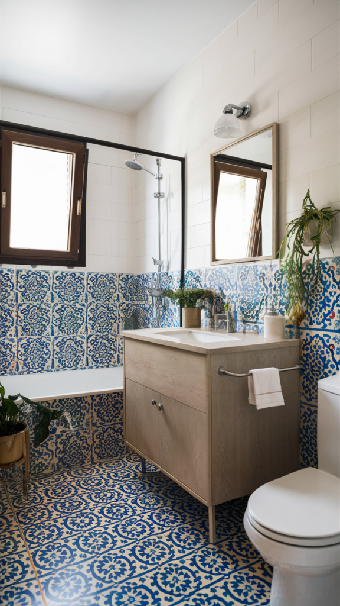
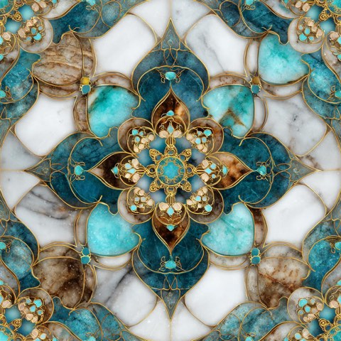
10pcs Floor Tiles Self Adhesive, Teal White and Brown, Moroccan Floral Pattern
Shop on Amazon13. Classic Marble
Polished marble brings a genuine sense of luxury that's hard to replicate with any other material, veining included.
It's a higher-maintenance, higher-cost choice, best suited to someone who's prioritizing the look over long-term upkeep ease.
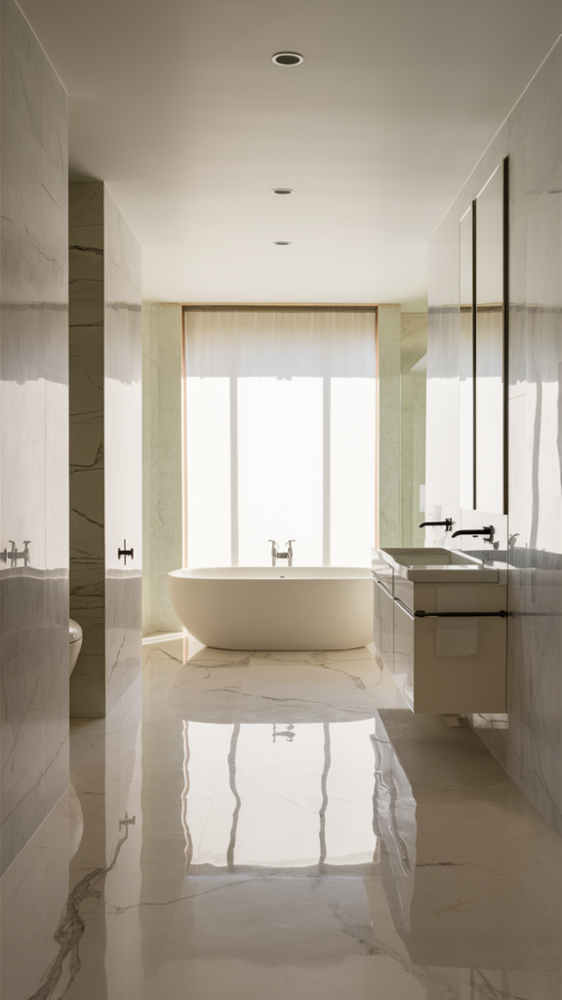
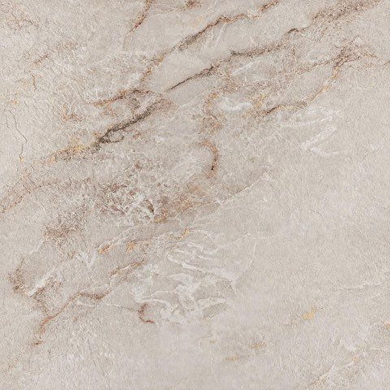
Marble Grain 12x12 Peel and Stick Floor Tile, Creamstone Marble, 10 PCS
Shop on Amazon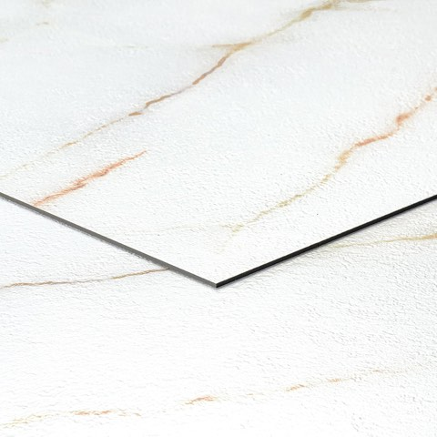
Livelynine Peel and Stick Floor Tile, Pink Gold White Marble, Waterproof, 4-Pack
Shop on AmazonPick the Floor, Set the Tone
None of these 13 materials is universally correct. The right one depends on your bathroom's size, the overall style direction you're going for, and how much maintenance feels realistic for you long-term.
If your bathroom's on the smaller side specifically, leaning lighter and glossier within whichever material you choose helps the space read as larger than it actually is.
Whichever material wins out in the end, the floor sets the tone for everything built on top of it.